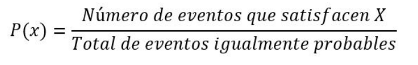

Introducción
El espacio muestral o espacio de muestreo es
un conjunto de todos los resultados posibles
individuales de un experimento aleatorio, esta nos
sirve para calcular la frecuencia con que se obtienen
los resultados de una experiencia aleatoria. En casos
equiprobables, la probabilidad se calcula dividiendo
la cantidad de casos favorables por la cantidad de
casos posibles. La probabilidad siempre va ser un
número menor o igual a 1 y no debe ser negativo,
esto es porque los pasos posibles siempre son más
que los favorables o iguales a estos.
En la teoría de la probabilidad, el espacio muestral
(también llamado espacio de descripción muestral o
espacio de posibilidad) de un experimento o ensayo
aleatorio es el conjunto de todos los resultados
posibles de ese experimento.
Un espacio muestral generalmente se denota usando
notación de conjunto, y los posibles resultados
ordenados se enumeran como elementos del
conjunto. Es común hacer referencia a un espacio
muestral con las etiquetas S, Ω o U (para “ conjunto
universal”). Los elementos del espacio muestral
pueden ser palabras, letras, símbolos o números.
También pueden ser finitos, infinitos contables o
infinitos incontables.
Un subconjunto en el espacio muestral es un evento,
denotado por. Si el resultado de un experimento se
incluye en, el evento ha ocurrido. Por ejemplo, si
el experimento está lanzando una sola moneda, el
espacio muestral es el conjunto, donde el resultado
significa que la moneda salió cara y el resultado
significa que la moneda era cruz. Los posibles
eventos son y. Para lanzar dos monedas, el espacio
muestral es, donde el resultado es si ambas monedas
son caras, si la primera moneda es cara y la segunda
es cruz, si la primera moneda es cruz y la segunda es
cara, y si ambas monedas son cruz.
Para lanzar un solo dado de seis lados, donde el
resultado de interés es el número de pepitas hacia
arriba, el espacio muestral es {1, 2, 3, 4, 5, 6}. Para
elegir un color del arco iris, el espacio muestral es
{rojo, naranja, amarillo, verde, azul, índigo, violeta}.
Un espacio muestral bien definido y no vacío es uno
de los tres componentes de un modelo probabilístico
(un espacio de probabilidad). Los otros dos elementos básicos son: un conjunto bien definido de posibles
eventos (un espacio de eventos), que suele ser el
conjunto de poder de si es discreto o un sigma-álgebra
en si es continuo, y una probabilidad asignada a cada
evento (una función de medida de probabilidad). Otra
forma de ver un espacio muestral es visualmente.
El espacio muestral suele estar representado por un
rectángulo y los resultados del espacio muestral se
indican mediante puntos dentro del rectángulo. Los
eventos están representados por óvalos y los puntos
encerrados dentro del óvalo conforman el evento.
Tipos de espacio muestral
Al conjunto por los posibles resultados elementales de
un ejercicio aleatorio se denomina espacio muestral
de dicho experimento. Dependiendo de cómo sea este
conjunto, espacios muestrales pueden ser:
- Espacio muestral discreto finito
- Espacio muestral discreto infinito
- Espacio muestral continuo
El espacio muestral discreto finito se trata de un
número finito de elementos, un ejemplo sería lanzar
un dado.
El espacio muestral infinito se trata de un número
infinito de elementos, un ejemplo sería lanzar un
dado hasta que salga un tres.
Espacio muestral continuo se trata de un número
infinito no numerable de elementos, un ejemplo
seria todas las medidas posibles de tomates extraídos
aleatoriamente de una población
Símbolo del espacio muestral
El espacio muestral se denota con la letra griega Ω
(Omega). Está compuesto por todos los sucesos
elementales o compuestos de la muestra y, por lo
tanto, coincide con el suceso seguro. Es decir, suceso
que siempre va a ocurrir.
Un ejemplo es el lanzamiento de una moneda sería:
Ω = {C, X}
Dónde C es cara y X es cruz. Esto es, los posibles
resultados únicos son cara o cruz.
Condiciones de un espacio muestral
Un conjunto Ω (Omega) debe cumplir algunas
condiciones para ser un espacio muestral:
- Los resultados deben ser mutuamente excluyentes
- Los resultados deben ser colectivamente
exhaustivos, es decir, en cada experimento (o ensayo
aleatorio) siempre tendrá lugar algún resultado.
- El espacio muestral (Omega) debe tener la
granularidad adecuada de lo que nos interese.
Debemos eliminar la información que no sirva del
espacio muestral. En otras palabras, debemos elegir
la abstracción correcta (olvidar alguna información
irrelevante).
Múltiples espacios muestrales
En muchos experimentos, debe de haber más de un
espacio muestral plausible disponible, dependiendo
del resultado que sea de interés. Por ejemplo, al
robar una carta de una baraja normal de cincuenta y
dos cartas, una posibilidad para el espacio muestral
pueden ser los distintos rangos (del as al rey),
mientras que otra posibilidad podrían ser los palos
(tréboles, corazones, diamantes o espadas). Sin
embargo, una descripción mucho más completa a los
resultados podría especificar tanto la denominación
como el palo, y se puede construir un espacio
muestral que describa cada carta individual como el
producto de los dos espacios muestrales mencionados
anteriormente. También son posibles otros espacios
de muestra, cómo {lado derecho hacia arriba, el revés
hacia abajo} si algunas de estas cartas se han volcado
al barajar.
Resultados igualmente probables
Algunos tratamientos de probabilidad asumen que los
diversos resultados de un experimento se definen de
tal manera que siempre tienen la misma probabilidad.
Para cualquier espacio muestral con N resultados
igualmente posibles, a cada resultado se le asigna una
probabilidad de 1 / N. Sin embargo, hay experimentos
que no se identifican fácilmente por el área de muestra
de resultados igualmente probables; por ejemplo, si
una persona arrojó un alfiler muchas veces y observó
si caía hacia arriba o hacia abajo, no hay simetría que
sugiera que los dos resultados deban ser igualmente probables.

Si bien la mayoría de los fenómenos aleatorios no
tienen resultados igualmente probables, puede ser útil
definir un espacio muestral de modo que los resultados
sean al menos aproximadamente igualmente
probables, porque esta condición simplifica
significativamente el cálculo de probabilidades para
eventos dentro del espacio muestral.
Por ejemplo, si se lanzan dos dados para generar dos
enteros distribuidos uniformemente, D 1 y D 2 , cada
uno en el rango [1 ... 6], los 36 pares ordenados (D 1 ,
D 2 ) constituyen un espacio muestral de igualmente
eventos probables. En este caso, se aplica la fórmula
anterior, de modo que la probabilidad de una cierta
suma, digamos D 1 + D 2 = 5, se muestra fácilmente
como 4/36, ya que 4 de los 36 resultados producen 5
como una suma. Por otro lado, el espacio muestral de
las 11 sumas posibles, {2,…, 12} no son resultados
igualmente probables, por lo que la fórmula daría un
resultado incorrecto (1/11)
Muestra aleatoria simple
Se hacen estas inferencias sobre las propiedades de
una población mediante el estudio de una muestra
de los individuos de esa población. Para llegar a
una modelo que presente para evaluar, no sesgada
de las verdaderas características de la población,
los estadísticos a menudo buscan estudiar una
prueba aleatoria simple, es decir, una prueba en la
que todos los individuos de la población tienen la
misma probabilidad de estar incluidos. 274-275 El
desenlace de esto es que cada combinación posible de
sujetos que podrían ser elegidos para la prueba tiene
la misma probabilidad de ser la prueba seleccionada
(es decir, el espacio de prueba aleatorias simples de
un tamaño dado de una población determinada se
compone de conclusiones igualmente probables).
Espacios de muestra infinitamente grandes
En el enfoque básico de la probabilidad, cualquier
subconjunto del espacio muestral a menudo
se denomina evento. Sin embargo, esto genera
problemas cuando el espacio muestral es continuo,
lo que requiere una definición más precisa de un evento. De acuerdo con esta definición, solo los
subconjuntos medibles del espacio muestral, que
forman un álgebra sobre el espacio muestral en sí,
se consideran eventos. Un ejemplo de un espacio
muestral infinitamente grande es medir la vida útil
de la lámpara. [0, ∞)
Usos
El uso consiste en un conjunto de los datos posibles
resultados de un experimento aleatorio, también se
puede hacer un subconjunto del espacio muestral
llamado eventos.
- Como ejemplo, considere el experimento de lanzar
un dado de seis caras. ¿Cuál es el espacio muestral
S?
S= (6,5,4,3,2,1)
Este sería el espacio muestral del dado
- Como ejemplo, para los eventos seria; Al lanzar un
dado una vez.
E=en la cara superior aparece un numero par
E= (2,4,6)
Conclusión
En conclusión, su uso sería para la recolección de
datos de eventos y muestras. Con lo cual, se confirma
que el espacio muestral suele estar representado por
un rectángulo y los resultados del espacio muestral.
Del mismo modo, la representación gráfica mediante
óvalos es factible para la operación del conjunto del
espacio muestral.
Referencias
- Armas, J. (1988). Estadística sencilla: probabilidades.
Mérida: Consejo de Publicaciones de la
Universidad de Los Andes.
- “Espacio muestral, eventos y probabilidad” (PDF).
Matemáticas en Illinois.
- “Espacios muestrales, eventos y sus probabilidades”
saylordotorg.github.io. Consultado el 21 de
noviembre de 2019.
- Tsitsiklis, John (primavera de 2018). “Espacios
de muestra”. Instituto de Tecnología de
Massachusetts. Consultado el 9 de julio de 2018.
- “Resultados igualmente probables” (PDF).
Universidad de Notre Dame.
- “Capítulo 3: Probabilidad” (PDF). Colegio
Comunitario Coconino.
- “Muestras aleatorias simples” web.ma.utexas.edu.
Consultado el 21 de noviembre de 2019.
- https://es.slideshare.net/nicoyep97/espacio-muestral-22158430
- https://economipedia.com/definiciones/espacio-muestral.html
- https://es.slideshare.net/JoanFernandoChipia/experimentos-aleatorios-espacio-muestral-yeventos
- https://proyectodescartes.org/iCartesiLibri/materiales_didacticos/EstadisticaProbabilidadInferencia/Probabilidad/2_1ExperimentosAleatorios/index.
html
- https://www.smartick.es/blog/matematicas/recursos-didacticos/ejercicios-de-probabilidad/#Suceso

 Licenciatura en Matemáticas,
Universidad Francisco de Paula Santander.
Licenciatura en Matemáticas,
Universidad Francisco de Paula Santander.